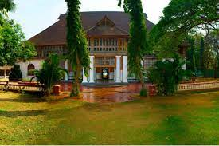
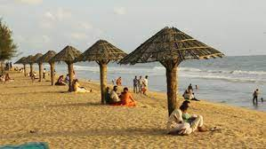

Ernakulam bordering the district of Thrissur in the north, Idukki in the East, Alapuzha and Kottayam in the south, Lakshadweep Sea in the west is an amalgam of a hoary heritage and global growth of industry and commerce. For the outside world, Ernakulam is part of Kochi referred to in the history of Kerala as the Queen of Arabian Sea. The densely populated Ernakulam District embodies the achievements of the Kerala State in literacy, industry, trade and commerce. With an inclusive culture, relatively high per capita income and an unstoppable interest of the people in updating themselves of the political, economic, social and cultural happenings in the national and international spheres, Ernakulam represents the high modern phase of the Kerala society.
Famous Tourist Spots:
Bolghatty palace

This is the oldest palace built by the Dutch outside the Kingdom of Holland. The palace was built by a Dutch merchant in 1744. Later, it was renovated with a magnificent lawn and a number of reforms. The palace served as the official residence of Dutch Governor.
In 1909, the palace was purchased by the King of Cochin for the English East India Company. The palace was the residence of British governors during the British rule. When India gained independence in 1947, the palace became part of the Bharatiya dynasty. KTDC This palace took over in 1976. Later it started to be used as a hotel. The magnificent palace is also home for the shooting of Malayalam films. In 2001, KTDC renovated this palace with a cost of Rs 5.1 crore
Cherai Beach

Around two dozen kilometres from the industrial district of Ernakulam and to the side of the Vypeen Island lies every swimmer’s paradise, Cherai Beach. It is a favourite haunt of those looking for a relaxing swim with the backdrop of coconut groves being the added incentive. It provides a wonderful view of the famous Chinese Fishing Nets or Cheena Vala well. The nearby shacks provide you with fresh cuisine that fills you up perfectly after a delightful swim.
The seashells found here are unique and one often runs into dolphins in this area. It is the ideal blend of both the backwaters and the sea. The area itself has seen many new resorts and hotels crop up, which have facilitated the increase in tourist activity. Today it is amongst the most visited beaches in Kerala with a view that make it near impossible to tear yourself away once you get there.